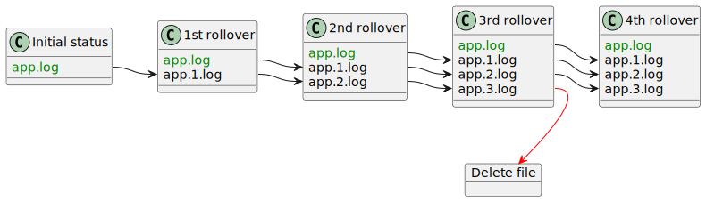
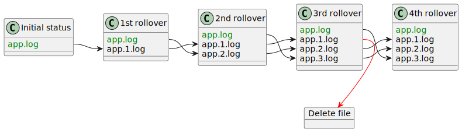
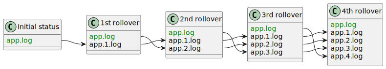

Rolling file appenders
Log4j Core provides multiple appenders that allow to archive the current log file and truncate it.
|
The rolling file appenders support many configuration options. If you are just interested in some configuration examples, see the Configuration recipes section. |
Appenders
Log4j Core provides two rolling file appenders:
RollingFile-
The
RollingFileAppender usesFileOutputStreamto access log files. RollingRandomAccessFile-
The
RollingRandomAccessFileAppender usesRandomAccessFileto access log files.
|
Two appenders, even from different logger contexts, share a common
Sharing a |
Common configuration
| Attribute | Type | Default value | Description | ||
|---|---|---|---|---|---|
Required |
|||||
The pattern for the archived log files. See Conversion patterns for details If |
|||||
|
The name of the appender. |
||||
Optional |
|||||
|
The size of the
See Buffering for more details. |
||||
|
|
If set to The See Buffering for more details. |
|||
boolean |
|
The appender creates the file on-demand. The appender only creates the file when a log event passes all filters and is routed to this appender. Defaults to false. |
|||
|
The path to the current log file, can be
|
||||
|
If not The underlying files system shall support POSIX file attribute view. |
||||
|
|
If not The underlying files system shall support file owner attribute view. |
|||
|
|
If not The underlying files system shall support POSIX file attribute view. |
|||
|
|
If Logging exceptions are always also logged to Status Logger |
|||
|
|
If set to See Buffering for more details. |
|||
| Type | Multiplicity | Description |
|---|---|---|
zero or one |
Allows filtering log events just before they are formatted and sent. See also appender filtering stage. |
|
zero or one |
Formats log events. See Layouts for more information. |
|
one |
Determines when to archive the current log file. See Triggering Policies for more information. |
|
zero or one |
Determines the actions performed during a rollover. See Rollover strategies for more information. |
Conversion patterns
The filePattern attribute accepts the following pattern specifiers:
-
runtime lookups, which are evaluated in a global context.
-
a
%d{...}pattern, functionally identical to the homonymousPatternLayoutpattern except it uses the actual or inferred timestamp of the previous rollover. -
a
%ipattern that expands to the computed index for the archived file.
All patterns accept also format specifiers, e.g. %03i prints the index as zero-padded number with 3 digits.
|
The
Setting the will write the instead. |
RollingFile configuration
The RollingFile Appender provides the following configuration options, beyond the common ones:
| Attribute | Type | Default value | Description |
|---|---|---|---|
|
|
If On most systems this guarantees atomic writes to the end of the file, even if the file is opened by multiple applications. |
|
|
|
If Note that the effects of this setting depend on the Operating System: some systems like most POSIX OSes do not offer mandatory locking, but only advisory file locking. This setting can also reduce the performance of the appender. |
RollingRandomAccessFile configuration
The RollingRandomAccessFile Appender provides the following configuration options, beyond the common ones:
| Attribute | Type | Default value | Description |
|---|---|---|---|
|
|
If This setting does not give the same atomicity guarantees as for the
|
Triggering Policies
Triggering policies are Log4j plugins that implement the
TriggeringPolicy
interface and are used to decide when is it time to rollover the current log file.
Common concerns
Triggering policies usually decide to rollover a file based on two parameters:
-
the size of the current file.
While all JVMs can reliably check the size of a file, Log4j only checks it at startup and at each rollover and infers all file size changes, based on the size of logs delivered. If multiple managers are writing to the same file, the size computation will be off.
-
the creation timestamp of the current file.
Not all file systems support a creation timestamp. Most notably, POSIX does not specify such a timestamp, so the value used by Log4j might depend on the type of filesystem used and the JVM. If the creation timestamp is not available, the last modification timestamp is used, which might differ by up to a whole rollover period.
See
BasicFileAttributes.creationTime()for more details.After the first rollover Log4j uses the timestamp of the rollover as creation timestamp.
OnStartupTriggeringPolicy
The OnStartupTriggeringPolicy policy causes a rollover only once during the lifetime of a JVM.
A rollover will occur if the log file was created before the start time of the current JVM and the minimum file size is met or exceeded.
| Attribute | Type | Default value | Description |
|---|---|---|---|
|
|
The minimum size the file must have to roll over. |
|
The On platforms where JMX is absent or disabled, like Android or
Google App Engine, the |
CronTriggeringPolicy
The CronTriggeringPolicy triggers rollover based on a CRON expression.
|
The
|
|
This policy is controlled by a timer and is asynchronous in processing log events, so it is possible that log events from the previous or next period may appear at the beginning or end of the log file. |
| Attribute | Type | Default value | Description |
|---|---|---|---|
boolean |
|
On startup the cron expression will be evaluated against the current file’s creation timestamp. If a rollover should have occurred between that time and the current time the file will be immediately rolled over. |
|
|
The cron expression, using the same syntax as the Quartz scheduler. The supported fields are in order:
See
|
SizeBasedTriggeringPolicy
The SizeBasedTriggeringPolicy causes a rollover once the file has reached the specified size.
The size can be specified in bytes, with the suffix KB, MB, GB, or TB for example 20MB.
size.
The size may also contain a fractional value such as 1.5 MB.
The size is evaluated using the Java root Locale so a period must always be used for the fractional unit.
|
When combined with a time-based triggering policy, the
|
| Attribute | Type | Default value | Description |
|---|---|---|---|
|
The maximum file size of the current log file. Once this size is reached, a rollover will occur. The syntax of this attribute is: <number> [ " " ] [ <unit> ] i.e.:
|
TimeBasedTriggeringPolicy
The TimeBasedTriggeringPolicy causes a rollover, when the smallest time unit in filePattern changes value.
So the rollover can occur at the end of a month, week, at midnight, end of the hour, etc.
|
The
Multiple |
| Attribute | Type | Default value | Description |
|---|---|---|---|
|
|
How often a rollover should occur based on the most
specific time unit in the last |
|
|
|
If For example, if the rotation frequency is hourly with an interval of
Only applies if |
|
|
|
Indicates the maximum number of seconds to randomly delay a rollover. This setting is useful on servers where multiple applications are configured to roll over log files at the same time and can spread the load of doing so across time. |
|
When the rollover frequency is daily or lower, the rolling file appender will rotate files at midnight of the server’s default timezone. You can modify the time of the rollover by specifying a different timezone in the |
Multiple policies
A rolling file appender allows only one nested triggering policy element.
If you wish to use multiple policies, you need to wrap them in a Policies element.
The element itself has no configuration attributes.
|
The effects of using both time-based triggering policies ( |
For example, the following XML fragment defines policies that rollover the log:
-
when the JVM starts.
-
when the log size reaches 10 MB.
-
at midnight local time.
-
XML
-
JSON
-
YAML
-
Properties
log4j2.xml<RollingFile name="FILE"
fileName="app.log"
filePattern="app.%d{yyyy-MM-dd}.%i.log">
<JsonTemplateLayout/>
<Policies>
<OnStartupTriggeringPolicy/>
<SizeBasedTriggeringPolicy/>
<TimeBasedTriggeringPolicy/>
</Policies>
</RollingFile>log4j2.json"RollingFile": {
"name": "FILE",
"fileName": "app.log",
"filePattern": "app.%d{yyyy-MM-dd}.%i.log",
"JsonTemplateLayout": {},
"Policies": {
"OnStartupTriggeringPolicy": {},
"SizeBasedTriggeringPolicy": {},
"TimeBasedTriggeringPolicy": {}
}
}log4j2.yamlRollingFile:
name: "FILE"
fileName: "app.log"
filePattern: "app.%d{yyyy-MM-dd}.%i.log"
JsonTemplateLayout: {}
Policies:
OnStartupTriggeringPolicy: {}
SizeBasedTriggeringPolicy: {}
TimeBasedTriggeringPolicy: {}log4j2.propertiesappender.0.type = RollingFile
appender.0.name = FILE
appender.0.fileName = app.log
appender.0.filePattern = app.%d{yyyy-MM-dd}.%i.log
appender.0.layout.type = JsonTemplateLayout
appender.0.policy.type = Policies
appender.0.policy.0.type = OnStartupTriggeringPolicy
appender.0.policy.1.type = SizeBasedTriggeringPolicy
appender.0.policy.2.type = TimeBasedTriggeringPolicyRollover strategies
A rollover strategy determines how old archive files are rotated or deleted to make place for newer ones. The actions performed during a rollover include:
-
Renaming files in a cyclic way. See Incrementing file indexes for more details.
-
Compression of archived log files. See Compressing archived files for more details.
-
Deletion of old archived log files. See
Deleteaction for more details. -
Changing the POSIX permissions of archived log files. See
PosixViewAttributeaction for more details.
There are two different rollover strategies available out of the box:
DefaultRolloverStrategy-
This is the default strategy used if the
fileNameconfiguration attribute is specified. It stores the current log file in the location specified byfileNameand the archived log files in the location specified byfilePattern. DirectWriteRolloverStrategy-
This is the default strategy used if the
fileNameconfiguration attribute isnull. It stores the current log file directly in its rolled over location specified byfilePattern.
|
Using runtime lookups in the |
Common configuration
Both rollover strategies support the following configuration parameters:
| Attribute | Type | Default value | Description |
|---|---|---|---|
|
|
Determine the compression level of archived log files. See Compressing archived files for more details. |
|
Temporary location to store compressed files. See Compressing archived files for more details. |
|||
|
|
If |
| Type | Multiplicity | Description |
|---|---|---|
zero or more |
Additional actions to perform on a rollover beyond file rotation and compression. See Optional actions for more details. |
DefaultRolloverStrategy configuration
The DefaultRolloverStrategy supports additional attributes that control the incrementation of file indexes.
| Attribute | Type | Default value | Description |
|---|---|---|---|
enumeration |
|
Determines the strategy for determining the value of the The supported values are: |
|
|
|
Minimum value for the |
|
|
|
Maximum value for the This attribute is ignored if |
DirectWriteRolloverStrategy configuration
The DirectWriteRolloverStrategy has a reduced set of configuration options for incrementing the file index:
-
the minimum file index is always
1. -
the incrementing strategy is always
max. -
the maximum file index can be configured using the following configuration attribute:
Table 12. DirectWriteRolloverStrategyconfiguration attributesAttribute Type Default value Description int7Maximum value for the
%iconversion pattern.
Incrementing file indexes
During a rollover event, the current log file is moved to the location determined by evaluating
filePattern, using min as value for the %i conversion pattern.
If an old log file is already present in that location, the rolling file appender:
-
Tries to increment the value of
%iusing the strategy specified by thefileIndexconfiguration attribute. -
If that fails, it removes the oldest log file and rotates the remaining ones to make place for a new log archive.
There are three strategies available:
min-
Using the
minstrategy, the newest log file will have indexminand the oldest one will have indexmax.This is the log rotation strategy used by traditional UNIX tools and by Log4j 1. It is not the default strategy of Log4j 2.
Assuming
min="1"andmax="3"the rotation of the log files is represented in the graph below:
max-
Using the
maxstrategy, the oldest log file will have indexminand the newest one will have indexmax.This is the default strategy since Log4j 2.
Assuming
min="1"andmax="3"the rotation of the log files is represented in the graph below:
nomax-
Using the
nomaxstrategy no files will ever be deleted and newer archive files will be assigned increasing index numbers, starting frommin.
Compressing archived files
When the current log file is archived, the rolling file appender can compress it. Compression is activated, based on the extension of the archived file name. The following extensions are recognized:
| Extension | Supports compressionLevel |
Description |
|---|---|---|
✓ |
ZIP archive using the DEFLATE algorithm |
|
✓ |
GZIP archive using the DEFLATE algorithm |
|
|
✗ |
BZip2 algorithm |
|
✗ |
DEFLATE algorithm |
|
✗ |
Pack200 algorithm |
|
✗ |
XZ algorithm |
|
✗ |
ZStandard algorithm |
If the tempCompressedFilePattern attribute is set, the current log file:
-
will be compressed and stored in the location given by
tempCompressedFilePattern -
and then it will be moved to the location given by
filePattern.
- dep
-
Additional dependencies are required to use these compression algorithms:
-
Maven
-
Gradle
<dependency> <groupId>org.apache.commons</groupId> <artifactId>commons-compress</artifactId> <version>1.27.1</version> <scope>runtime</scope> </dependency>runtimeOnly 'org.apache.commons:commons-compress:1.27.1'The
.xzand.zstextensions require additional Commons Compress dependencies. See Commons Compress documentation for more details. -
Optional actions
The rotation of files and compression is always handled automatically by the rolling file appenders. Since Log4j 2.6, additional actions can be configured manually.
Log4j Core provides out-of-the-box two actions:
-
the
Deleteaction to delete old log files after a rollover, -
the
PosixViewAttributeaction to change the POSIX permissions of old log files.
Common action configuration
Both actions support the following configuration attributes:
| Attribute | Type | Default value | Description | ||
|---|---|---|---|---|---|
It sets the base directory for the action. The action will be limited to files in this directory, and all paths will be relative to this directory. Required |
|||||
|
|
If set to
|
|||
|
|
The maximum number of directory levels to visit.
By default, the action does not recurse into subdirectories of |
| Type | Multiplicity | Description |
|---|---|---|
zero or more |
A set of path conditions.
The action will only be performed on files for which the condition returns |
Delete action
The Delete Action deletes old log files that match the configured condition.
|
A limited version of this action is performed automatically to increment file indexes. You only need an explicit |
Besides the common configuration options the Delete Action also supports the following options:
| Attribute | Type | Default value | Description |
|---|---|---|---|
|
|
If |
| Type | Multiplicity | Description |
|---|---|---|
zero or more |
If present, the action will only be performed on files for which the condition returns Required, unless a |
|
zero or one |
Provides a sorting order for files contained in The default implementation is
|
|
zero or one |
If present, all the nested |
PosixViewAttribute action
This action allows modifying the POSIX attributes (owner, group and permissions) of archive log files.
|
By default, the POSIX attributes are inherited from the current log file. This action is only necessary if archived log files must have different attributes. |
Besides the common configuration options the PosixViewAttribute Action also supports the following options.
| Attribute | Type | Default value | Description |
|---|---|---|---|
|
If not The underlying files system shall support POSIX file attribute view. |
||
|
|
If not The underlying files system shall support file owner attribute view. |
|
|
|
If not The underlying files system shall support POSIX file attribute view. |
| Type | Multiplicity | Description |
|---|---|---|
one or more |
A set of conditions to select the files to modify. |
Path conditions
To select the files for additional actions, Log4j provides the following path conditions:
IfAccumulatedFileSize
When evaluated on a list of files, this condition sums the size of each file with the size of the preceding files.
It returns true for files that exceed a configurable threshold.
|
The result of this condition depends on the sorting order on files.
See |
| Attribute | Type | Default value | Description |
|---|---|---|---|
The threshold size for the condition to match. Admits the same syntax as the Required |
| Type | Multiplicity | Description |
|---|---|---|
zero or more |
A set of optional nested conditions. This condition matches only if all the nested conditions also match. |
IfAccumulatedFileCount
When evaluated on a list of files, this condition returns true if the 1-based index of a file exceeds a configurable threshold.
|
The result of this condition depends on the sorting order on files.
See |
| Attribute | Type | Default value | Description |
|---|---|---|---|
|
The threshold for the condition to match. Required |
| Type | Multiplicity | Description |
|---|---|---|
zero or more |
A set of optional nested conditions. This condition matches only if all the nested conditions also match. |
IfFileName
Matches files based on their path relative to the base directory.
| Attribute | Type | Default value | Description |
|---|---|---|---|
String |
Matches the path relative to the base directory using a See
Required, unless |
||
Matches the path relative to the directory using a regular expression. See
Required, unless |
| Type | Multiplicity | Description |
|---|---|---|
zero or more |
A set of optional nested conditions. This condition matches only if all the nested conditions also match. |
IfLastModified
Accepts files based on their last modification timestamp.
| Attribute | Type | Default value | Description |
|---|---|---|---|
The condition accepts files that are as old or older than the specified duration. Required |
| Type | Multiplicity | Description |
|---|---|---|
zero or more |
A set of optional nested conditions. This condition matches only if all the nested conditions also match. |
IfNot
Negates the result of the nested condition.
| Type | Multiplicity | Description |
|---|---|---|
one |
The path condition to negate. |
IfAll
Accepts a file if all the nested conditions are true.
| Type | Multiplicity | Description |
|---|---|---|
one or more |
The nested conditions to check. |
ScriptCondition
The ScriptCondition uses a JSR 223 script to determine a list of matching files.
Its configuration consists of a single nested script element:
| Type | Multiplicity | Description |
|---|---|---|
one |
A reference to the script to execute. See Scripts for more details about scripting. |
The script must return a list of
PathWithAttributes
objects and supports the following bindings:
| Binding name | Type | Description |
|---|---|---|
The path of the base directory. |
||
The |
||
The list of files contained in the base directory. The paths are obtained by
resolving
the relative file names against
|
||
The |
||
The Status Logger to used by diagnostic messages in the script. |
||
|
|
If |
For an example of ScriptCondition usage, see the Using ScriptCondition example below.
Configuration recipes
logrotate equivalent configuration
Logrotate is a common UNIX utility that rotates log files.
Since a Java application cannot be notified that the log files need to be reloaded logrotate can be used with Java application through its copytruncate option (see
logrotate(8) man page).
A sample logrotate configuration file might therefore look like:
/var/log/app.log {
copytruncate
compress
rotate 15
daily
maxsize 100k
}This configuration has a problem, which is explained in the documentation of the copytruncate option:
Note that there is a very small time slice between copying the file and truncating it, so some logging data might be lost.
Fortunately you can replace the usage of logrotate with a rolling file appender.
An equivalent configuration will look like this:
-
XML
-
JSON
-
YAML
-
Properties
log4j2.xml<RollingFile name="FILE"
fileName="/var/log/app.log"
filePattern="/var/log/app.log.%i.gz"> (1)
<JsonTemplateLayout/>
<DefaultRolloverStrategy max="15"/> (2)
<Policies>
<CronTriggeringPolicy schedule="0 0 0 * * ?"/> (3)
<SizeBasedTriggeringPolicy size="100k"/> (4)
</Policies>
</RollingFile>log4j2.json"RollingFile": {
"name": "FILE",
"fileName": "/var/log/app.log",
"filePattern": "/var/log/app.log.%i.gz", (1)
"JsonTemplateLayout": {},
"DefaultRolloverStrategy": {
"max": 15 (2)
},
"Policies": {
"CronTriggeringPolicy": {
"schedule": "0 0 0 * * ?" (3)
},
"SizeBasedTriggeringPolicy": {
"size": "100k" (4)
}
}
}log4j2.yamlRollingFile:
name: "FILE"
fileName: "/var/log/app.log"
filePattern: "/var/log/app.log.%i.gz" (1)
JsonTemplateLayout: {}
DefaultRolloverStrategy:
max: 15 (2)
Policies:
CronTriggeringPolicy:
schedule: "0 0 0 * * ?" (3)
SizeBasedTriggeringPolicy:
size: "100k" (4)log4j2.propertiesappender.0.type = RollingFile
appender.0.name = FILE
appender.0.fileName = /var/log/app.log
(1)
appender.0.filePattern = /var/log/app.log.%i.gz
appender.0.layout.type = JsonTemplateLayout
appender.0.strategy.type = DefaultRolloveStrategy
(2)
appender.0.strategy.max = 15
appender.0.policy.type = Policies
appender.0.policy.0.type = CronTriggeringPolicy
(3)
appender.0.policy.0.schedule = 0 0 0 * * ?
appender.0.policy.1.type = SizeBasedTriggeringPolicy
(4)
appender.0.policy.1.size = 100k| 1 | Equivalent to compress: archived files are compressed. |
| 2 | Equivalent to rotate 15: only the 15 latest log files are kept. |
| 3 | Equivalent to daily: logs will be rotated at midnight of each day. |
| 4 | Equivalent to maxsize 100k: logs will be rotated if they exceed 100 kB of size. |
Timestamped log file names
The following configuration creates one log file every day and deletes those more than 15 days old.
|
Since we have a |
-
XML
-
JSON
-
YAML
-
Properties
log4j2.xml<RollingFile name="FILE"
filePattern="/var/log/app.%d{yyyy-MM-dd}.log.gz"> (1)
<JsonTemplateLayout/>
<DirectWriteRolloverStrategy>
<Delete basePath="/var/log"> (2)
<IfFileName regex="app\.\d{4}-\d{2}-\d{2}\.log\.gz"/> (3)
<IfLastModified age="P15D"/>
</Delete>
</DirectWriteRolloverStrategy>
<TimeBasedTriggeringPolicy/>
</RollingFile>log4j2.json"RollingFile": {
"name": "FILE",
"filePattern": "/var/log/app.%d{yyyy-MM-dd}.log.gz", (1)
"JsonTemplateLayout": {},
"DirectWriteRolloverStrategy": {
"Delete": { (2)
"basePath": "/var/log",
"IfFileName": {
"regex": "app\\.\\d{4}-\\d{2}-\\d{2}\\.log\\.gz" (3)
},
"IfLastModified": {
"age": "P15D"
}
}
},
"TimeBasedTriggeringPolicy": {}
}log4j2.yamlRollingFile:
name: "FILE"
filePattern: "/var/log/app.%d{yyyy-MM-dd}.log.gz" (1)
JsonTemplateLayout: {}
DirectWriteRolloverStrategy:
Delete: (2)
basePath: "/var/log"
IfFileName:
regex: "app\\.\\d{4}-\\d{2}-\\d{2}\\.log\\.gz" (3)
IfLastModified:
age: "P15D"
TimeBasedTriggeringPolicy: {}log4j2.propertiesappender.0.type = RollingFile
appender.0.name = FILE
(1)
appender.0.filePattern = /var/log/app.%d{yyyy-MM-dd}.log.gz
appender.0.layout.type = JsonTemplateLayout
appender.0.strategy.type = DirectWriteRolloverStrategy
(2)
appender.0.strategy.delete.type = Delete
appender.0.strategy.delete.basePath = /var/log
appender.0.strategy.delete.0.type = IfFileName
(3)
appender.0.strategy.delete.0.regex = app\\.\\d{4}-\\d{2}-\\d{2}\\.log\\.gz
appender.0.strategy.delete.1.type = IfLastModified
appender.0.strategy.delete.1.age = P15D
appender.0.policy.type = TimeBaseTriggeringPolicy| 1 | Only the filePattern attribute is used, since we use the DirectWriteRolloverStrategy. |
| 2 | An explicit Delete action is provided. |
| 3 | You can select the files to delete using a regular expression or a simpler app.*.log.gz glob pattern. |
Using ScriptCondition
If the supplied path conditions are not sufficient, you can use a ScriptCondition with an arbitrary script.
The example above can be rewritten into the following Groovy script:
script-condition.groovydef limit = FileTime.from(ZonedDateTime.now().minusDays(15).toInstant())
def matcher = FileSystems.getDefault().getPathMatcher('glob:app.*.log.gz')
statusLogger.info("Deleting files older than {}.", limit) (1)
return pathList.stream()
.filter({
def relPath = basePath.relativize(it.path) (2)
def lastModified = it.attributes.lastModifiedTime()
Files.isRegularFile(it.path)
&& lastModified <= limit (3)
&& matcher.matches(relPath) (4)
})
.collect(Collectors.toList())| 1 | Adding Status Logger calls in your script might help in debugging it. |
| 2 | PathWithAttributes.getPath()
always starts with basePath, so we need to relativize it. |
| 3 | Equivalent to the IfLastModified condition. |
| 4 | Equivalent to the IfFileName condition. |
You can use the script in your configuration file as follows:
-
XML
-
JSON
-
YAML
-
Properties
log4j2.xml<RollingFile name="FILE"
filePattern="/var/log/app.%d{yyyy-MM-dd}.log.gz">
<JsonTemplateLayout/>
<DirectWriteRolloverStrategy>
<Delete basePath="/var/log">
<ScriptCondition>
<ScriptFile path="script-condition.groovy"
language="groovy"/>
</ScriptCondition>
</Delete>
</DirectWriteRolloverStrategy>
<TimeBasedTriggeringPolicy/>
</RollingFile>log4j2.json"RollingFile": {
"name": "FILE",
"filePattern": "/var/log/app.%d{yyyy-MM-dd}.log.gz",
"JsonTemplateLayout": {},
"DirectWriteRolloverStrategy": {
"Delete": {
"basePath": "/var/log",
"ScriptCondition": {
"ScriptFile": {
"path": "script-condition.groovy",
"language": "groovy"
}
}
}
},
"TimeBasedTriggeringPolicy": {}
}log4j2.yamlRollingFile:
name: "FILE"
filePattern: "/var/log/app.%d{yyyy-MM-dd}.log.gz"
JsonTemplateLayout: {}
DirectWriteRolloverStrategy:
Delete:
basePath: "/var/log"
ScriptCondition:
path: "script-condition.groovy"
language: "groovy"
TimeBasedTriggeringPolicy: {}log4j2.propertiesappender.0.type = RollingFile
appender.0.name = FILE
appender.0.filePattern = /var/log/app.%d{yyyy-MM-dd}.log.gz
appender.0.layout.type = JsonTemplateLayout
appender.0.strategy.type = DirectWriteRolloverStrategy
appender.0.strategy.delete.type = Delete
appender.0.strategy.delete.basePath = /var/log
appender.0.strategy.delete.condition.type = ScriptCondition
appender.0.strategy.delete.condition.script.type = ScriptFile
appender.0.strategy.delete.condition.script.path = script-condition.groovy
appender.0.strategy.delete.condition.script.language = groovy
appender.0.policy.type = TimeBaseTriggeringPolicySeparate folder per month
We can also create separate folders for temporarily related files. In the example below, we create a different folder for each month:
-
XML
-
JSON
-
YAML
-
Properties
log4j2.xml<RollingFile name="FILE"
filePattern="/var/log/app/%d{yyyy-MM}/%d{yyyy-MM-dd}.log.gz"> (1)
<JsonTemplateLayout/>
<DirectWriteRolloverStrategy>
<Delete basePath="/var/log/app"
maxDepth="2"> (2)
<IfLastModified age="P90D"/>
</Delete>
</DirectWriteRolloverStrategy>
<TimeBasedTriggeringPolicy/>
</RollingFile>log4j2.json"RollingFile": {
"name": "FILE",
"filePattern": "/var/log/app/%{yyyy-MM}/%d{yyyy-MM-dd}.log.gz", (1)
"JsonTemplateLayout": {},
"DirectWriteRolloverStrategy": {
"Delete": {
"basePath": "/var/log/app",
"maxDepth": 2, (2)
"IfLastModified": {
"age": "P90D"
}
}
},
"TimeBasedTriggeringPolicy": {}
}log4j2.yamlRollingFile:
name: "FILE"
filePattern: "/var/log/app/%d{yyyy-MM}/%d{yyyy-MM-dd}.log.gz" (1)
JsonTemplateLayout: {}
DirectWriteRolloverStrategy:
Delete:
basePath: "/var/log/app"
maxDepth: 2 (2)
IfLastModified:
age: "P90D"
TimeBasedTriggeringPolicy: {}log4j2.propertiesappender.0.type = RollingFile
appender.0.name = FILE
(1)
appender.0.filePattern = /var/log/app/%d{yyyy-MM]/%d{yyyy-MM-dd}.log.gz
appender.0.layout.type = JsonTemplateLayout
appender.0.strategy.type = DirectWriteRolloverStrategy
appender.0.strategy.delete.type = Delete
appender.0.strategy.delete.basePath = /var/log/app
(2)
appender.0.strategy.delete.maxDepth = 2
appender.0.strategy.delete.0.type = IfLastModified
appender.0.strategy.delete.0.age = P90D
appender.0.policy.type = TimeBaseTriggeringPolicy| 1 | We use two %d patterns to specify the folder and file name. |
| 2 | We increase the recursion depth of the Delete action to extend to subfolders of the base directory. |